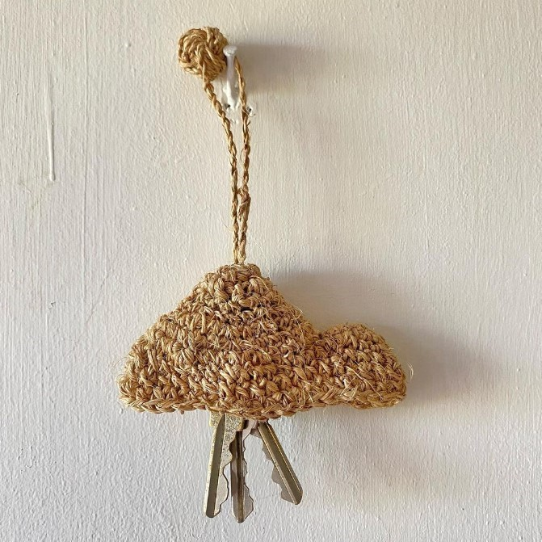
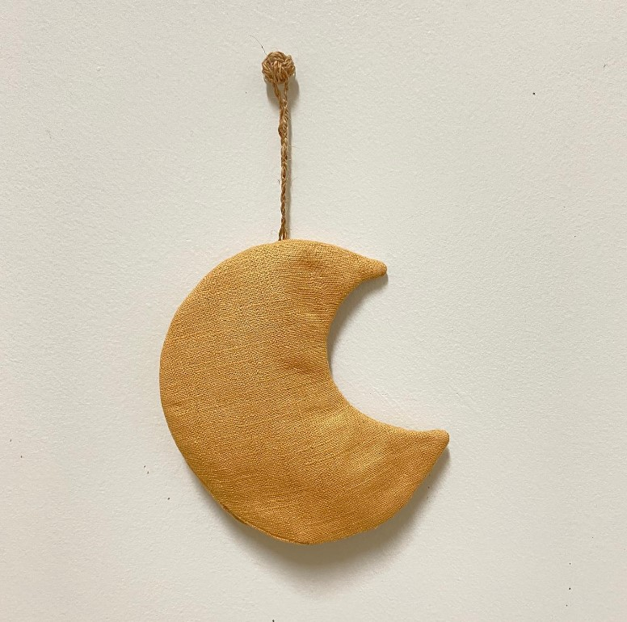
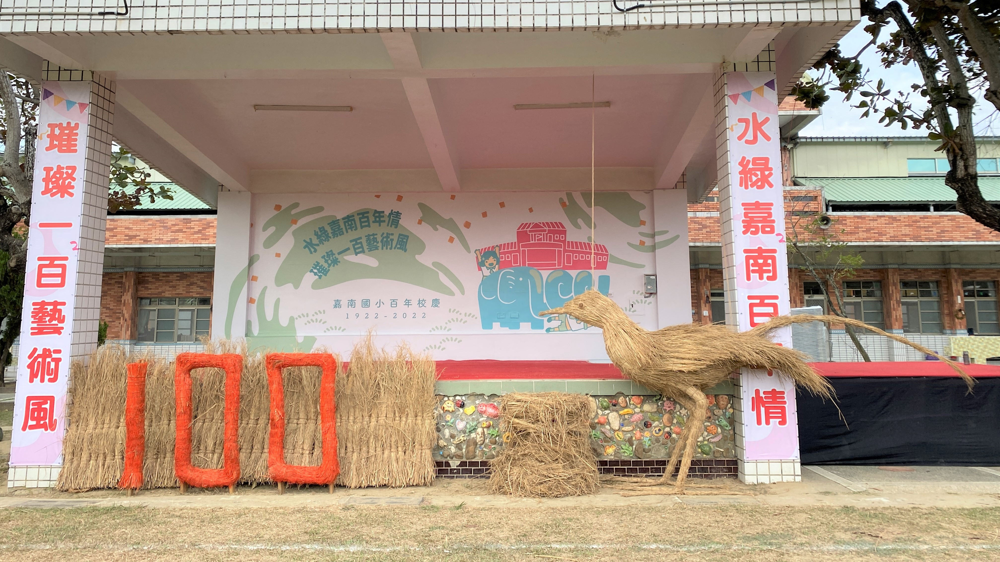

陳秋竹 纖維藝術創作者
展覽經驗
「翻浪經緯線-臺中推動纖維工藝 28 年風華」特展
2023/06/17~2023/10/22
策展人顏名宏深入梳理臺中推動纖維工藝發展的脈絡，探究交織歷年時空的創作思維，邀請的參展者來自臺灣各角落、從事不同行業，「纖維」是他們集體共同的語言，作為自身與外界對話的介面，呈現各自關注的議題，地域性藺草、苧麻纖維、常民海洋信仰、高山原民符碼、當代藝術複媒創作，來自身體維度測量的芊絲對照生活中的小物翻轉，集結了跨域「生活」、「自然」、「文化」、「纖絲」等不同議題的省思。
「心花開」個展
2023/05/03~2023/05/24
「心花開」地毯系列作品，想為時常下雨總是悶在家裡的人，或是生病無法出門的人，妝點沉悶室內空間。使用工業廢紗線製作色彩繽紛的花朵，在家裡也可以開心的欣賞花草。地毯可以掛壁或是平鋪在地上，可隨使用者的心情，變換不同的擺放方式。
「鉤情顯形」個展
2022/06/02~2023/06/22
當每天出門時，思考今天的工作，感覺自己的心情，才決定你要背出門的包。「鈎情顯形」，透過手捻線與鉤針的過程，塑造看不見摸不著的情感，實體化的呈現，鉤織出來各種心情的包包，並非有實用性，但都有滿足心靈層面的功能性，滿足今日的心情。
TRACE 電繡織物展
2021/05/15~2021/05/21
「TRACE」電腦刺繡機裡的一個功能，這功能可以追蹤顯示出電繡範圍。而我們也正用我們的生命軌跡做轉譯，絲線在一上一下的過程中發展成獨有的語言。 如果語言是一種電繡基因，重新以藝術家之間的對話，會產生什麼藝術觀點和時空的對話可能？ 來自7位的具有物語性的作品，以電繡為出發，翻找著那些我不了解的它。
得獎經驗
臺中市纖維工藝博物館
2022「第五屆纖維創作獎」 藝術類 - 優選
2021「第四屆纖維創作獎」 美術工藝類 - 入選
2020「第三屆纖維創作獎」 美術工藝類 - 入選
合作內容
課程教學
2023/08/21、28 高雄區
小山與月亮黃麻鑰匙包手作課，於高雄市田寮區崇德社區發展協會，111年度的高雄市農村再生計畫中「崇德社區黃麻編織創新計畫」，認識堅韌的黃麻，教在地區民與使用黃麻材料鈎織鑰匙包，也吸引其他縣市也熱愛纖維創作的學員，遠道而來的一同學習。
客製商品
2023/04/16 台中區
動物系列的月桃編織盒大受歡迎~因為有別於傳統的樣式，許多客人都訂製動物系列的月桃盒。
/月桃1.JPG)
/月桃2.JPG)
藝術裝置
2022/12/16 臺南區
嘉南國民小學慶祝100年校慶，製作在特有生態「水雉鳥」的造型，結合稻草藝術，為校園裡的司令台做裝置藝術。
